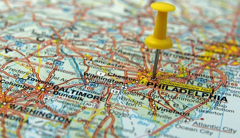
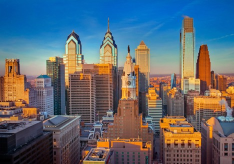
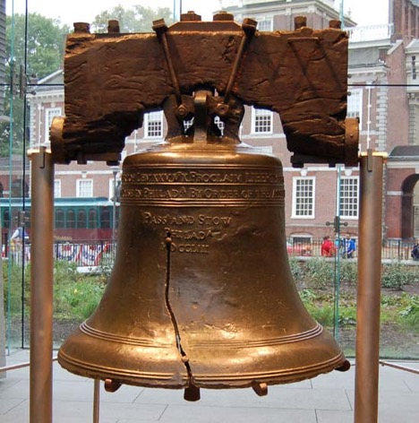
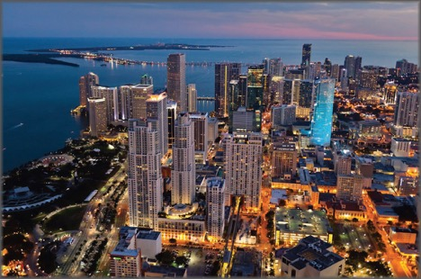
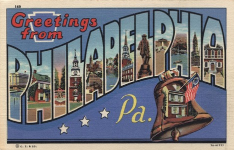
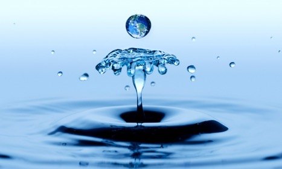
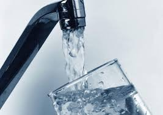
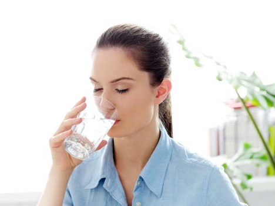

13 Reasons You Should Live In Philly At Least Once In Your Life
- 1. Almost 2,000 women and men of the Philadelphia Water Department work around the clock to make sure that safe, high-quality drinking water is always on tap.

- 2. Providing a safe and abundant supply of water is their commitment to all of their customers, both large and small.

- 3. PWD uses proven treatment practices and participates in groundbreaking research to provide drinking water that consistently exceeds EPA standards.
- 4. Philadelphia's drinking water sources are the Delaware and Schuylkill rivers, and the PWD's pledge to their customers extends to the stewardship of
the region's water resources.
- 5. Currently, every three years the Philadelphia Water Department tests for lead in tap water at more than 50 representative taps of vulnerable homes in the city.

- 6. PWD has embraced a watershed protection approach that tracks and evaluates events and practices that may impact water quality.

- 7. Watershed businesses and residents also play a role in the health of our waterways. Proper disposal of hazardous wastes, household chemicals and unused prescriptions are
essential to protecting our drinking water.

- 8. So far, our test results show that our treatment techniques keep lead levels to a minimum.

- 9. The Bureau of Laboratory Services tests water in different stages of treatment from Philadelphia's drinking water and wastewater plants to make sure that
treatment is proceeding properly.

- 10. The Bureau of Laboratory Services tests Philadelphia's drinking water at more than 65 locations around the city to make sure it is clean, not only when it leaves
our plants, but when it gets to our customers.
- 11. The Bureau of Laboratory Services tests our composted biosolids to make sure they are clean and safe for use on gardens and other recycling land applications.

- 12. The Bureau of Laboratory Services tests treated wastewater to make sure that it is environmentally safe to return to our rivers.
- 13. The Bureau of Laboratory Services tests pipes, concrete and other materials to make sure they perform as specified.

- Catch you in the city of brotherly love!
- Return to Listicle Website.